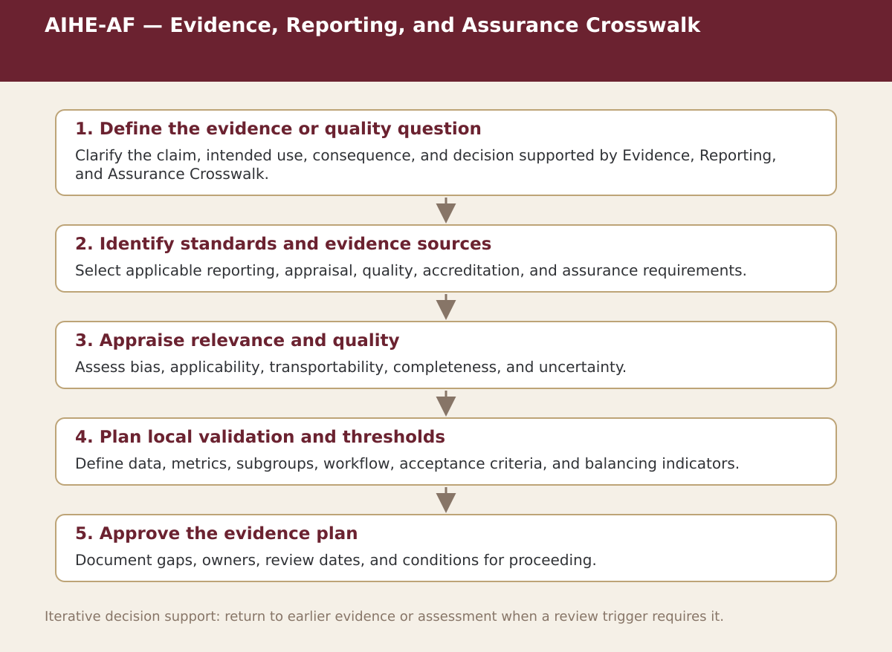

Supplemental specialist tool · Chapter 8
AIHE-AF — Evidence, Reporting, and Assurance Crosswalk
Match evidence and assurance needs to reporting standards, appraisal tools, lifecycle guidance, and management systems.

Process steps
| Step | Stage | Purpose | Required Input | Expected Output | Decision Or Gate |
|---|---|---|---|---|---|
| 1 | Define the evidence or quality question | Clarify the claim, intended use, consequence, and decision supported by Evidence, Reporting, and Assurance Crosswalk. | Local evidence and the prior approved step | Versioned record for: Define the evidence or quality question | Proceed, revise, escalate, restrict, or stop as appropriate |
| 2 | Identify standards and evidence sources | Select applicable reporting, appraisal, quality, accreditation, and assurance requirements. | Local evidence and the prior approved step | Versioned record for: Identify standards and evidence sources | Proceed, revise, escalate, restrict, or stop as appropriate |
| 3 | Appraise relevance and quality | Assess bias, applicability, transportability, completeness, and uncertainty. | Local evidence and the prior approved step | Versioned record for: Appraise relevance and quality | Proceed, revise, escalate, restrict, or stop as appropriate |
| 4 | Plan local validation and thresholds | Define data, metrics, subgroups, workflow, acceptance criteria, and balancing indicators. | Local evidence and the prior approved step | Versioned record for: Plan local validation and thresholds | Proceed, revise, escalate, restrict, or stop as appropriate |
| 5 | Approve the evidence plan | Document gaps, owners, review dates, and conditions for proceeding. | Local evidence and the prior approved step | Versioned record for: Approve the evidence plan | Proceed, revise, escalate, restrict, or stop as appropriate |
Status. This process map is a navigation and decision-support aid. Adapt it to the relevant jurisdiction, institution, population, workflow, technology version, evidence cut-off, and accountable authority.